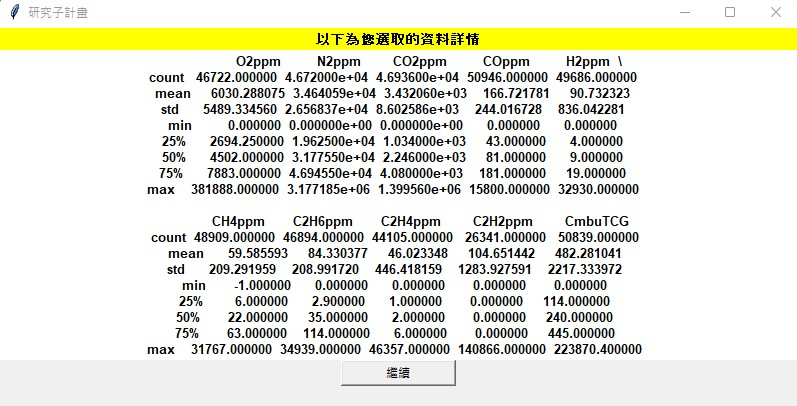
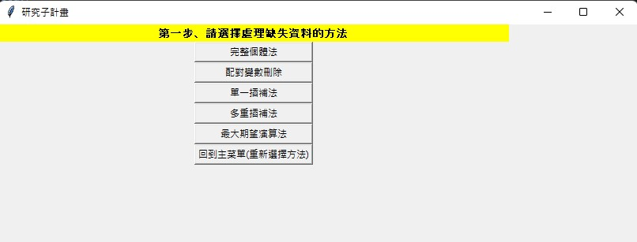
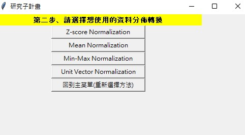

此成果為我就讀碩士期間，由我們實驗室與農學院合作，農學院提供畜牧相關蒐集資料，如餵食、牛隻各
狀態等各項數據，希望能藉由統計方法與分析，更有效率的應用在畜牧業上，而我負責的計畫部分則是寫
出統計分析的UI應用介面程式，方便提供使用者進行資料分析並觀看結果。
以下為此統計UI介面詳細介紹:
登入畫面
登入介面之畫面
帳號:NCHU
密碼:user
接著選擇匯入檔案，需特別注意匯入之csv檔資料需為,數值型態，避免程式執行錯誤。
1.對於缺失值，我們有許多填補的方法，但我們須事可先檢查資料中是否有時間序列之變數，以利我們對於此類變數的缺失值有更好的填補效果。
在這邊我們會將您選擇的變數做近值差補，也就是用前一筆資料當作差補值。
各變數下的統計敘述量
2.對剩餘的變數選擇插補之方法
以上插補法各有其優缺點，依需求自行選擇
完整個體法:刪除每筆有缺失值之資料，如此便不會產生插補值與缺失位置之真實值的誤差，但若缺失值不少，如此可能刪除過多資料，大幅降低了資料的參考性。
配對變數刪除法:其方法同完整個體法，但我們只選擇要分析之變數，如此可降低整體刪除的資料數量。
單一插補法:填入一種統計敘述量，如每個變數各別填入彼此的平均值、中位數等等。
多重插補法:選擇欲迭代次數來插補缺失值。
最大期望演算法
:在概率模型中尋找參數最大似然估計或者最大後驗估計的算法。
在進行資料建模或分析前，將資料進行歸一化是較好的選擇，不但能較快速的收斂，也能讓彼此的資料範圍更為集中，方便觀察。
用Z-SCORE法歸一化完之資料
在資料處理中，若資料有極端值，有可能為資料抄寫錯誤、異常等原因造成
，此時若將這些極端值都納入分析，有可能對最終分析結果造成不良的影響
，因此提供以下方法，供使用者參考是否刪除一些不適合之資料。
盒狀圖法中各變數的視覺化圖形
使用多項式回歸之結果
以上圖結果為例，左上角之'Dep. Variable'為使用者回歸模型選擇之應變量，下方則為自變量，以下為此表中的重要的結果說明：
R-square:使用者選擇之自變量對此回歸模型的解釋能力，因此數值愈靠近1愈好。
Adj.R-square:上述之R-square在自變數為多個的情況下，由於計算方法其值無可避免會大幅上升，此為統計學家修正公式計算出的
調整數值，適合應用於實務上自變量較多的情況。
F-statistic:此統計敘述量用於檢定此迴歸模型是否有存在之價值，以下為說明:
H0:此迴歸模型的所有自變量為0
H1:此迴歸模型並非所有的自變量都為0
若F-statistic在拒絕域中，則拒絕H0，代表此回歸模型具有存在價值。
prob F-statistic:方便用來觀看檢定結果之數值，若此值小於顯著水準(實務上常用0.05)，則拒絕上述F檢定之H0假設。
coef:此自變量的回歸系數。
t用於T檢定，檢測該變數是否存在對自變量的解釋價值，以下為說明：
H0:此變數對應變數無解釋力
H1:此變數對應變數有解釋力
若t值在拒絕域中，則拒絕H0，代表此變數對該模型有存在價值。
P>|t|:方便用來觀看檢定結果之數值，若此值小於顯著水準(實務上常用0.05)，則拒絕上述T檢定之H0假設。